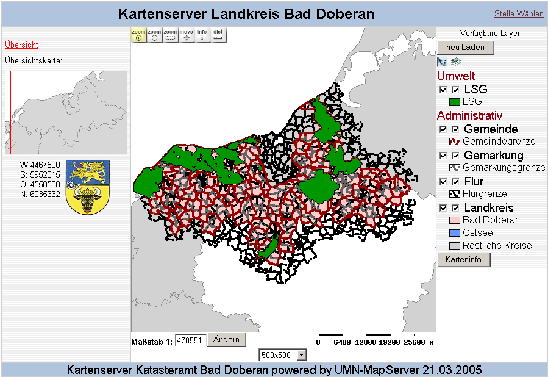
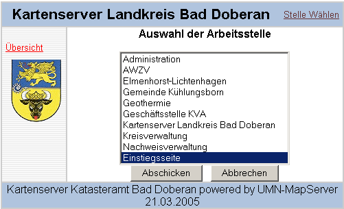
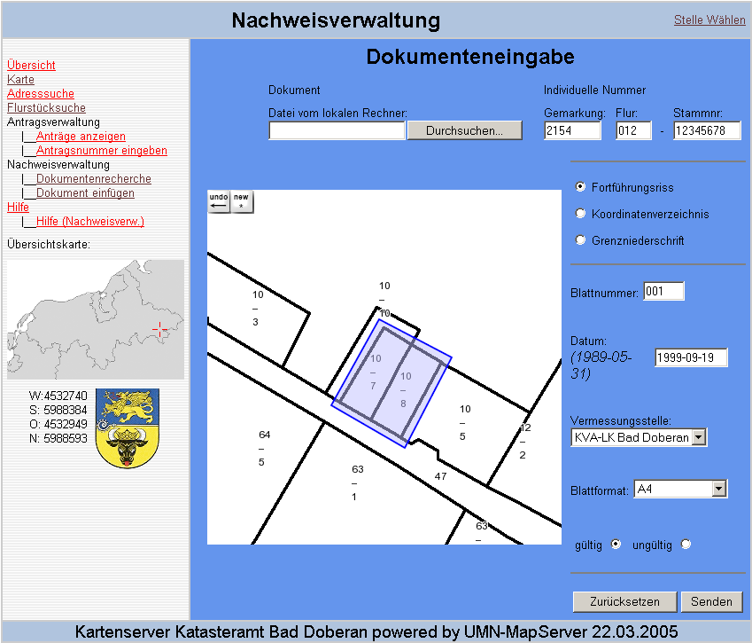
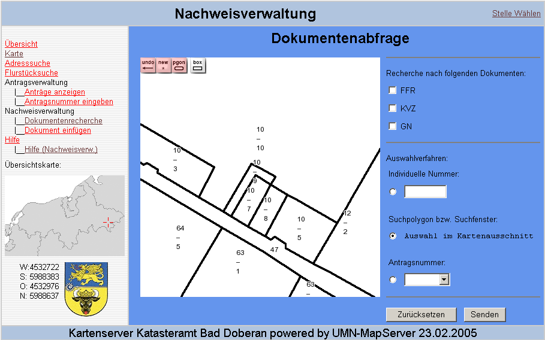
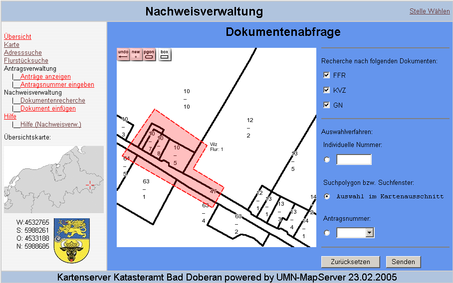
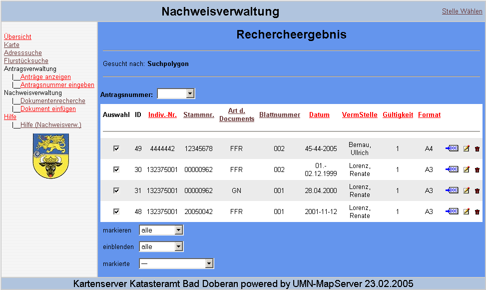
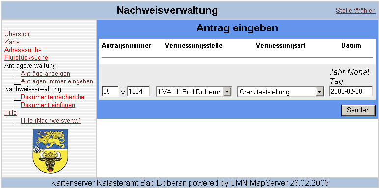
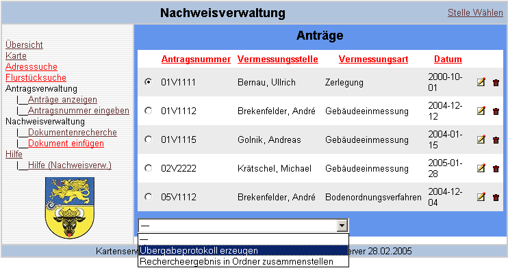

Inhalt
- Nachweisverwaltung
- Allgemeine Beschreibung der Nachweisverwaltung
- Vorraussetzung für die Nutzung
- Einrichten der Stelle
- Hinzufügen
von Dokumenten
- Arbeitsbereich einstellen
- Metadateneingabe
- Auswahl des gescannten Bildes
- Polygon digitalisieren
- Eintrag in die Datenbank
- Recherchieren von Nachweisen
- Ändern
von Nachweisen
- Antragsverwaltung
- Allgemeine Beschreibung der Nachweisverwaltung
- Anlegen
von Anträgen
- Eintrag in die Datenbank
- Antragsbearbeitung
- Dokumentenverwaltung
- Allgemeine Beschreibung der Dokumentenverwaltung
- Dokumentenkopfverwaltung
- Dokumentenköpfe auswählen
- Dokumentenkopf ändern
- Dokumentenkopf erstellen
- aktuelle Druckvorlage festlegen
Allgemeine Beschreibung der Nachweisverwaltung
- Die Nachweisverwaltung dient der digitalen Fortführung des
Liegenschaftskatasters. Mit dieser Anwendung können alle Dokumente, die
als Nachweis im Liegenschaftskataster geführt werden, zusammen mit Ihren
beschreibenden Daten eingeflegt und danach recherchiert werden. Zu allen
Dokumenten, die als Bilddatei vorliegen, wird neben dem Metadaten auch
der Raumbezug abgespeichert. Der Raumbezug, wird in Form eines Polygons
realisiert, das auf der Grundlage der ALK zuvor festgelegt und zusammen
mit den Metadaten in die Datenbank eingepflegt wird. Mit Hilfe der
Metadaten und des Raumbezugs, können dann die Dokumente recherchiert und
ausgegeben werden.
Vorraussetzung für die Nutzung
- Um die Anwendungen der Nachweisverwaltung nutzen zu können, benötigen Sie eine Freigabe für diese Fachschale zu Ihrem Login-Daten, die Sie vom zuständigen Administrator bekommen.
- Wenn Sie die Nachweisverwaltung nutzen möchten, müssen Sie sich unter der richtigen Arbeitsstelle im Menü "Stelle wählen" anmelden.
- Dazu öffnen Sie die Startseite des Kartenserver und klicken auf den Link "Menü auswählen" im rechten oberen Teil des Browserfensters.
- Es öffnet sich ein Fenster mit der Auswahl der Arbeitsstellen. Markieren Sie hier bitte die Arbeitsstelle "Nachweisverwaltung" und klicken Sie auf den Button "Abschicken" der sich unter dem Auswahlfeld der Arbeitsstellen befindet.
- Mit dem Button "Abbrechen" gelangen Sie wieder auf die Startseite des Kartenservers.
- Nach der Auswahl der Arbeitsstelle "Nachweisverwaltung" und dem
betätigen des Button "Abschicken" gelangen Sie auf die Oberfläche der
Nachweisverwaltung. Im linken Teil des Browser-Fensters hat sich des
Menu Ihrer Fachschale angepasst und im Kopf des Browser-Fensters steht
nun "Nachweisverwaltung".
1.Schritt: Stelle wählen
2.Schritt: Arbeitsstelle markieren und abschicken

3.Schritt: Oberfläche der Nachweisverwaltung

- Um diese Funktion nutzen zu können, müssen Sie sich zuvor unter Nachweisverwaltung einwählen. Näheres finden Sie im Abschnitt "Einrichten der Stelle" beschrieben.
- Als nächstes muss der Bereich für das einzupflegende Dokument eingerichtet werden. Dazu muss mir Hilfe der Navigationsellemente, im Grafikfenster, oder über den Menü-Punkt "Flurstücksuche" der ALK-Ausschnitt so einrichtet werden, das später das Polygon für den Raumbezug festgelegt werden kann.
- Wenn Sie den ALK-Ausschnitt richtig festgelegt haben, finden Sie auf der rechten Seite des Browser-Fensters eine Menü Leiste mit der Rubrik Nachweisverwaltung. Kicken Sie den Menü-Punkt "Dokumente hinzufügen" unter der Rubrik Nachweisverwaltung an.
- Jetzt erscheint die Oberfläche der Dokumenteingabe. Der
ALK-Auschnitt muss bei diesem Schritt übernommen worden sein.

- In den übernommenen Ausschnitt sollte als erstes das Polygon mit den entsprechenden Werkzeugen im Grafikfenster festgelegt werden.
- Danach folgt die Eingabe der beschreibenden Daten und die Wahl der Bilddatei für das einzupflegende Dokument. Hierbei ist zu beachten, das alle Eingaben getätigt und die hochzuladende Datei ausgewählt werden muss. Erst dann kann man den Datensatz mit dem Button "Senden" in die Datenbank einpflegen. Ist eine Eingabe fehlerhaft oder gar nicht angegeben worden, ändert sich die Hintergrundfarbe und es erscheint eine Fehlermeldung
- Der Eintrag der Daten erfolgt in die Tabelle "n_nachweise", der jeweiligen Datenbank.
- Sollte ein Nachweis mit einer Fehleingabe in die Datenbank eingepflegt worden sein, können Sie, wie unter "Ändern von Nachweisen" beschrieben, den Datensatz ändern.
- Um diese Funktion nutzen zu können, müssen Sie sich zuvor unter Nachweisverwaltung einwählen. Näheres finden Sie im Abschnitt "Einrichten der Stelle" beschrieben.
- Sind die erfolgreich unter der Arbeitsstelle Nachweisverwaltung angemeldet, erscheint im linken Teil des Browser-Fenster, unter Kategorie Nachweisverwaltung, der Menü-Punkt "Dokumentenrecherche".
- Bevor Sie den Menü-Punkt anwählen, müssen Sie entscheiden, ob sie mit Hilfe eines Polygon (Box) recherchieren wollen. Ist das der Fall, müssen Sie zuvor den Kartenauschnitt mit Hilfe der "Flurstückssuche" oder der Graphikelemente im Grafikfenster zu dem entsprechenden Flurstück navigieren.
- Wählen Sie jetzt den Menü-Punkt an und es öffnet sich die Oberfläche
für die Dokumentenrecherche. Im Kopf steht "Dokumentenabfrage".

- Zunächst, müssen Sie die Art der Nachweise auswählen, nach dem Sie recherchieren wollen wählen.
- Als nächstes müssen Sie die Art der Recherche festlegen. Standardmäßig ist die Recherche mit Hilfe des Polygon (Box) eingestellt. Beachten Sie, das der Kartenausschnitt jetzt nicht mehr angepasst werden kann. Reicht der Kartenausschnitt für die Recherche nicht aus, müssen Sie erneut ins Menü "Nachweisverwaltung" wechseln und den Kartenausschnitt definieren.
- Bei den weiteren Recherchemethoden kann entweder nach der
individuellen Nummer eines einzelnen Nachweis gesucht werden oder nach
den Nachweisen, die unter einer bestimmten Auftragnummer recherchiert
wurden.

- Nach dem das Polygon festgelegt ist und die Dokumnentenart ausgewählt wurde, kann man mit dem Button "Senden" die Recherche-Anfrage an die Datenbank senden.
- Das Rechercheergebnis könnte wie folgt aussehen:

- mit dem Auswahl-Feld "markieren" oder "einblenden" unter dem Rechercheergebnis, können Sie durch Massenbearbeitung die Dokumentenarten im Rechercheergebnis entsprechend markieren/Markierung aufheben oder einblende/ausblenden. Mit dem Auswahl-Feld "markierte" können Sie die markeirten Nachweise entweder zu einer Auftragsnummer hinzufügen oder entfernen. Die Auftragsnummer muss zuvor über dem Rechercheergebnis ausgewählt werden.
- Achtung: Beim hinzufügen von Nachweisen zu einem Auftrag, versichern Sie sich, das die Auftragsnummer über dem Rechercheergebnis richtig ausgewählt worden ist!!!
- Für die Übersichtlichkeit können Sie die Spaltennamen des Rechercheergebnis anklicken und entsprechend das Recherchergebnis neu sortieren lassen.
- Um Dokumente zu ändern muss eine recherche voraus gehen.
- Recherchieren Sie den Nachweis, das einer Änderung unterzogen werden soll, wie zuvor unter "Recherchieren von Nachweisen" beschrieben.
- In Ihrem Rechercheergebnis finden Sie das zuändernde Dokument, in
diesen Zeile sich rechts außen drei Ikons für "Ansicht-()", "bearbeiten-(
 )"
und "löchen-(
)"
und "löchen-( )" befinden. Bewegen Sie den Maus-Cursor einfach auf eines der
Ikons und kurz danach wird mittels ToolTip die Funktion des Ikons
angezeigt.
)" befinden. Bewegen Sie den Maus-Cursor einfach auf eines der
Ikons und kurz danach wird mittels ToolTip die Funktion des Ikons
angezeigt.
- Um ein Nachweis zu ändern, klicken Sie auf das Ikon "bearbeiten" in der Zeile des zu ändernden Nachweis der Rechercheergebnise. Sie gelangen zur Oberfläche der Dokumenteneingabe, wo die beschreibenden Daten zusammen mit den Raumbezug (Polygon) zu dem Nachweis angezeigt wird.
- Die beschreibenden Daten und das Polygon können hier entsprechend, wie unter "Hinzufügen von Dokumenten" beschrieben, geändert werden. Um die Änderung zum Nachweis einzupflegen, betätigen Sie den Button "Senden". Wenn die korregierten Angaben richtig eingegeben sind, werden die Daten somit neu in die Datenbank eingepflegt. Kontrollieren Sie nach dem bearbeiten eines Nachweis Ihre Änderung!
Allgemeines zur Antragsverwaltung
- Diese Anwendung der Antragsverwaltung dient der Verwaltung der Antragsnummern durch die Geschäftsstelle des Kataster- und Vermessungsamt. Nach Eingang eines Antrags auf Bereitstellung von Vermessungsunterlagen wird duch die Geschäftsstelle des Kataster- und Vermessungsamt eine Antragsnummer vergeben und in die Datenbank eingepflegt. Diese Auftragsnummer kann danach von weiteren Fachanwendungen genutzt werden.
- Um eine Antragsnummer anlegen zu können, müssen Sie sich unter der
Geschäftsstelle des Kataster- und Vermessungsamtes anmelden. Das
erfolgt, wie unter "Einrichten
der Stelle" beschreiben, an der Arbeitsstelle "Geschäftsstelle KVA".
Wählen Sie den Menu-Punkt "Antragsnummer eingeben" an. Damit gelangen
Sie auf die Oberfläche der Antragseingabe, wo im Kopf sich "Antrag
eingeben" befindet.

- Eine Antragsnummer gliedert sich in beiden letzen Stellen der Jahreszahl (2005), dem "V" für die Vorbereitung und der laufenden Nummer. Zu einem Antrag müssen noch die beantragende Vermessungsstelle, die Vermessungsart und das Eingangsdatum festgelegt werden. Nach der Eingabe der Antragsnummer und der beschreibenden Daten eines Antrags, werden die Daten mit betätigen des Button "Senden" in die Datenbank unter der Tabelle "n_antraege" eingepflegt. Um bei eventuellen Fehleingaben diese zu korregieren, verfährt Sie wie unter "Antragsbearbeitung" beschrieben.
- Um diese Funktion nutzen zu können, müssen Sie sich wie unter "Einrichten
der Stelle" beschrieben an der Arbeitsstelle "Nachweisverwaltung"
einmelden. Im linken Menü finden Sie unter der Rubrik Antragsverwaltung
den link "Anträge anzeigen" mit dem Sie auf die Oberfläche gelangen für
die Liste der Anträge. Im Kopf der Oberfläche steht jetzt "Anträge". Sie
finden hier alle Anträge, die sich in Bearbeitung befinden, aufgelistet.

- Wenn Sie einen Antrag bearbeiten oder löschen möchten, finden Sie in der Zeile des betreffenden Antrags das entsprechendes Ikon. Bewegen Sie den Mauscursor auf eins der Ikon und es wird die Funktion angezeigt, die sich hinter dem Ikon befindet.
- Mit dem Ikon "bearbeiten" ()
gelangen Sie auf die Oberfläche der "Antrag eingeben". Die zu dem Antrag
eingepflegten Metadaten werden geladen und angezeigt. Ändern Sie die
Eingabe der beschreibenden Daten, ähnlich wie unter Anlegen
von Anträgen beschrieben, und betätigen Sie den Button "Senden" um
die geänderten Daten in der Datenbank zu aktualisieren.
- Um eine Antrag zu löschen, betätigen Sie das Ikon "löschen" (),
in der Zeile der zu löschenden Antragsnummer. Danach erfolgt eine
Sicherheitsabfrage um ein versehentliches Löschen einer Antragsnummer zu
vermeiden. Bestätigen Sie diese Sicherheitsabfrage mit "Ja" um die
Antragsnummer endgültig zu löschen oder "Nein" um den Vorgang
abzubrechen.
- Für die Weiterbearbeitung von Nachweisen, finden Sie im unteren Browser-Fenster ein Auswahlfeld. In diesem Auswahlfeld, befinden sich die Optionen "Übergabeprotokoll erzeugen" und "Rechercheergebnis in Ordner zusammenstellen". Die Nachweise, die zuvor zu einer Antragsnummer recherchiert wurden, können hiermit weiter verarbeitet werden. Wählen Sie die entsprechenden Antrag durch setzen des Punktes in der Auswahl vor der Antragsnummer und wählen Sie unten die entsprechende Option aus!
- Mit der Option "Übergabeprotokoll erzeugen" erstellen Sie ein PDF-Dokument, in dem alle Dokumente der Recherche zu einer Auftragsnummer aufgelistet sind. Dieses Dokument wird im Ordner der jeweiligen Auftragsnummer unter x:\var\data\nachweise abgelegt.
- Mit der Option "Rechercheergebnis erzeugen" werden die Nachweise, die zur einer Antragsnummer recherchiert wurden, unter dieser Nummer im Ordner x:\var\data\nachweise abgelegt.
Allgemeine Beschreibung der Dokumentenverwaltung
- Die Dokumentenverwaltung dient der ...
- Mit der Dokumentenkopfverwaltung ist es möglich, Druckköpfe zu
erstellen und zu verwalten, die für den PDF-Export verschiedener
Dokumente verwendet werden können.
- Dokumentenkopfaufbau Ein Dokumentenkopf besteht aus mehreren
Feldern, von denen einige in der Dokumentenkopfverwaltung angepasst
werden können. Diese Felder sind:
- Hauptüberschrift
- Untertitel
- Wappen
- Adresse
- Gemarkung/Flurstück
- Maßstab
- Ort
- Datum
- Dokumentenköpfe auswählen Unter dem Punkt "Dokumentenkopfauswahl"
befindet sich ein Drop-Down-Menü, in dem die Namen aller verfügbaren
Dokumentenköpfe angezeigt werden. Wählt man einen der Köpfe aus, so
werden die entsprechenden Kopfdaten unter dem Punkt
"Dokumentenkopfdaten" angezeigt. Beim ersten Aufruf der Seite, ist der
als aktuelle Druckvorlage festgelegte Druckkopf ausgewählt.
- Dokumentenkopf ändern Üm einen ausgewählten Dokumentenkopf zu
verändern, passt man die Inhalte der entsprechenden Felder an und
betätigt anschließend das Kontrollfeld "Änderungen speichern".
Vorraussetzung für den erfolgreichen Abschluß der Operation ist, dass
die Felder "Name" und "Hauptüberschrift" belegt sind. Wird das Feld
"Datum" frei gelassen, wird beim PDF-Export stets das aktuelle Datum
verwendet.
- Dokumentenkopf erstellen Um einen neuen Dokumentenkopf zu erstellen,
passt man die Inhalte der gewünschten Felder an und betätigt
anschließend das Kontrollfeld "als neuen Kopf speichern". Vorraussetzung
für den erfolgreichen Abschluß der Operation ist, dass die Felder "Name"
und "Hauptüberschrift" belegt sind und dass kein anderer Dokumentenkopf
mit dem selben Namen bereits existiert. Auch hier gilt die gleiche
Konvention, dass bei freiem Feld "Datum" beim PDF-Export stets das
aktuelle Datum verwendet wird.
- aktuelle Druckvorlage festlegen Um den ausgewählten Dokumentenkopf
für die Verwendung beim PDF-Export festzulegen, betätigt man das
Kontrollfeld "übernehmen".